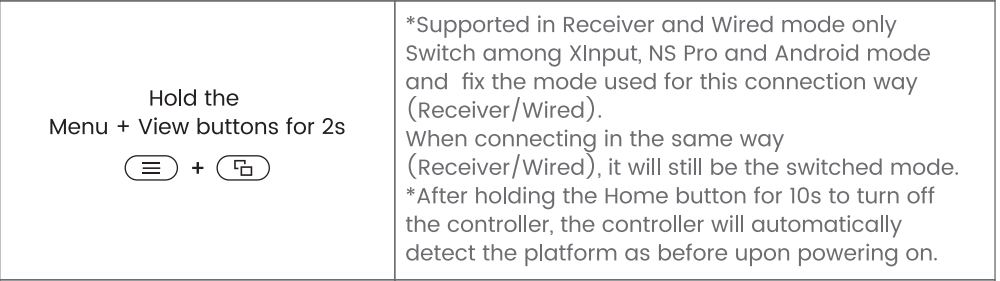
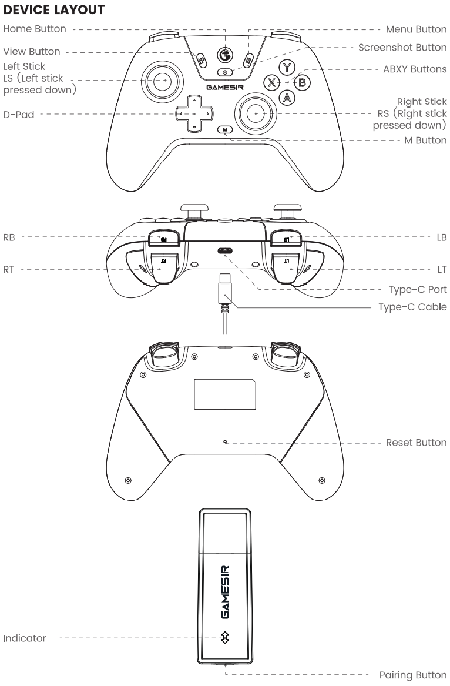
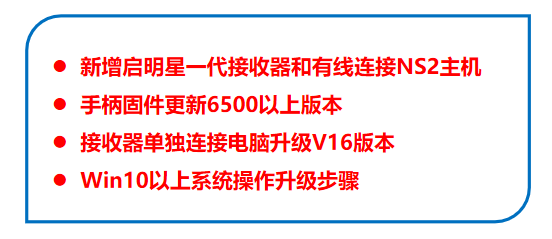
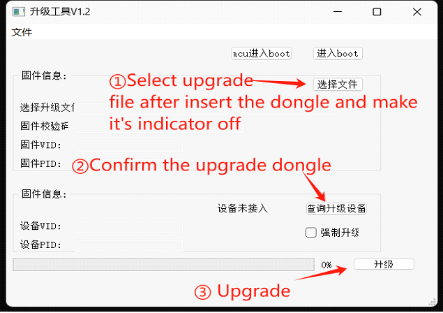
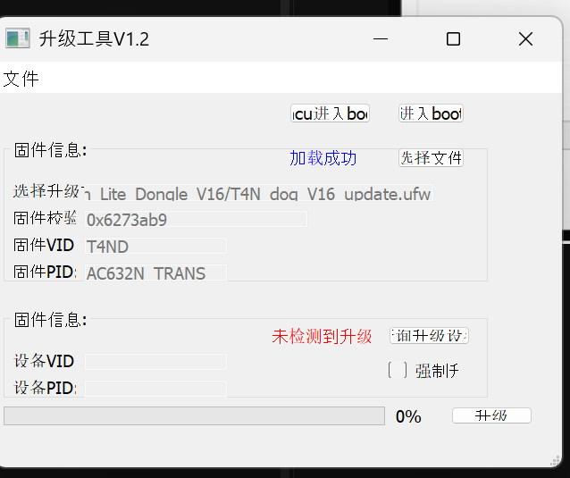

Se conecta, pero queda en el modo equivocado
El receptor aparece conectado, pero el mando queda en modo Nintendo Switch o no cambia al modo que espera el juego. En las pruebas de este caso, por cable el cambio funcionaba bien; el problema aparecía con el dongle.
La pista estaba en el aviso del firmware nuevo del mando: el receptor debía estar en V16. Gabriel completó la actualización desde otra PC, con Windows 10 y el programa ejecutado como administrador. En la PC con Windows 11 no había podido hacerlo.
El mando y el dongle se actualizan por separado, pero sus versiones deben acompañarse. La alternativa fue conservar el receptor de fábrica y volver el mando a 4.200 desde Android. Si ya actualizaste el receptor a V16, no dejes el mando en 4.200: en el caso probado esa mezcla también impedía cambiar de modo.
| Firmware del mando | Firmware del dongle | Cambio de modo |
|---|---|---|
| 7.000 | V16 | Funciona |
| 4.200 | De fábrica | Funciona |
| 7.000 | De fábrica | Falla |
| 4.200 | V16 | Falla |
7.000 también puede aparecer como 7000, y 4.200 como 4200. No se identificó la versión exacta del receptor de fábrica. La tabla describe las pruebas del caso, no todas las combinaciones posibles de firmware.
Cómo cambiar de modo
Con el mando conectado por dongle o cable, mantené juntos durante unos 2 segundos el botón de las ventanitas (View), a la izquierda del botón circular central con el logo, y el de las tres rayitas (Menu), a su derecha. Repetí la combinación para pasar al siguiente modo. Si ya cambia correctamente, no necesitás actualizar.

GameSir usa nombres diferentes en el manual y en la FAQ del modelo. Evitá identificar el tercer modo solo por el nombre o por un color. Para PC con receptor, la referencia útil es XInput y luz verde. Ver documentación.
Ubicar Home, View, Menu y el botón del dongle
Home es el botón con el logo; View, el de las dos ventanas; Menu, el de las tres líneas; y Captura, el botón pequeño debajo de Home. El botón de emparejamiento está en el extremo del receptor.

No uses estos archivos con Nova 2 Lite, Nova Lite 2, Nova, Super Nova ni T4 Pro. GameSir advierte que GameSir Connect puede inutilizar el dongle del Nova Lite. Usá la herramienta manual de esta guía.
Volver a firmware 4.200 desde Android
Este camino es para el mando con el receptor de fábrica sin actualizar. Si tu dongle ya está en V16, usá el mando en 7.000. Recomendamos la app GameSir en un teléfono o una tablet Android para gestionar el firmware del mando.
Conectá el mando en modo Android
Con el mando apagado, encendelo con Home + A. El indicador es amarillo. Si no aparece, mantené Home + Captura hasta que parpadee rápido. En Bluetooth del teléfono elegí GameSir-Nova Lite.
Abrí la app GameSir
Usá la app móvil desde el sitio oficial. Entrá a Dispositivos y seleccioná el Nova Lite conectado. No es la aplicación GameSir Connect de Windows.
Elegí la versión anterior
Entrá a Firmware Upgrade / Actualización de firmware, después a Other Version / Otras versiones, y elegí 4.200 / 4200. Confirmá que sea esa versión antes de continuar; no aceptes automáticamente la más nueva.
Esperá y volvé a conectarlo
Dejá el teléfono cerca y no apagues el mando durante la escritura. Al terminar, cerrá la app y volvé a enlazarlo con la PC o el receptor. Si una asociación Bluetooth vieja falla, eliminá esa asociación y emparejá de nuevo.
La app no muestra 4.200 o no reconoce el mando
Comprobá que lo encendiste con Home + A y que figura como Nova Lite. Estar conectado al Bluetooth no garantiza que la app lo haya identificado. Si no ofrece 4.200, no elijas otro archivo al azar. La alternativa es actualizar el receptor a V16 y mantener el mando en una versión nueva compatible.
Podés usar el camino de Windows para actualizar el dongle. La herramienta manual en chino también admite firmware del mando, pero no recomendamos ese procedimiento para el mando por su mayor complejidad. Por eso esta página distribuye únicamente el firmware del receptor. Si necesitás gestionar el mando, la recomendación es usar un Android prestado.
Esto no significa que GameSir no tenga app para iOS: sus funciones y compatibilidad dependen del modelo y la versión. No damos por garantizado el downgrade a 4.200 desde iPhone.
Actualizar el receptor USB a V16
La pareja recomendada y probada es mando 7.000 + receptor V16. El kit de esta página actualiza exclusivamente el receptor; el mando se gestiona aparte.
Primero, dejá el mando en 7.000
Si ya está en 7000, seguí con el dongle. Si lo bajaste a 4.200, conectalo a Android con Home + A, abrí su ficha en GameSir y entrá a Firmware Upgrade / Actualización de firmware. Elegí 7.000 / 7000, completá la escritura y comprobá la versión. Para este camino, el objetivo es actualizar ambos.

Necesitás Windows, el dongle original y el kit de abajo. Durante la actualización del receptor, dejá el mando apagado y cerrá las otras aplicaciones GameSir.
Extraé el kit y abrí la herramienta
Descargá el kit del receptor y extraé su contenido en una carpeta. Conservá las dos DLL junto a
app_window.exe; no lo ejecutes desde dentro del ZIP. En este caso hizo falta abrirlo con clic derecho → Ejecutar como administrador, en Windows 10. Hacelo antes de poner el dongle en modo de actualización.Cargá el archivo correcto
Pulsá 选择文件 (Seleccionar archivo) y elegí
T4N_dog_V16_update.ufw. El texto azul de carga correcta solo confirma que abrió el archivo.Entrá al modo de actualización
Con el dongle desconectado, mantené presionado su botón de emparejamiento. Conectalo al USB sin soltar y esperá aproximadamente 5 segundos, hasta que la luz se apague. Recién entonces soltá.
Detectalo e iniciá dentro de los 10 segundos
Desde que el dongle entra al modo de actualización, tenés unos 10 segundos para iniciar la escritura, según lo observado en este caso. Por eso el programa y el archivo deben estar preparados antes. Pulsá 查询升级设备 (Buscar dispositivo), comprobá la detección en el bloque inferior y seguí enseguida con Actualizar. Si sigue rojo o los VID/PID están vacíos, resolvé la detección; no fuerces la escritura.
Actualizá y esperá la confirmación
Pulsá 升级 (Actualizar) dentro de esa ventana. Los 10 segundos son para empezar, no para terminar. Una vez que escribe, no desconectes el dongle: esperá 100 % y el mensaje de actualización correcta. Después retiralo y volvé a conectarlo al USB.
Volvé a entrar al modo de actualización: desconectá el dongle, sostené su botón y conectalo de nuevo hasta que la luz se apague. Con el archivo ya cargado, comprobá la detección e iniciá enseguida. Si la escritura ya comenzó, dejá que termine.
Experiencia del caso: la actualización se logró en otra computadora con Windows 10, ejecutando el programa como administrador. En la PC con Windows 11 no funcionó. Esto no demuestra que falle en todas las PC con Windows 11.

Los tres botones que vas a usar
- 选择文件
- Seleccionar el archivo de firmware.
- 查询升级设备
- Buscar el dongle en modo de actualización.
- 升级
- Iniciar la actualización.
Dejá sin marcar la casilla de actualización forzada. No uses los botones superiores de entrada a boot como reemplazo del procedimiento.
Los archivos, sin mezclar dispositivos
Una copia de la herramienta y el firmware del receptor Nova Lite original, con instrucciones en español. No incluye firmware del mando.
Kit para Windows · Dongle V16
app_window.exe, las dos DLL, T4N_dog_V16_update.ufw, instrucciones, guía visual y hashes SHA-256.
ZIP de 36,4 MB. Sin firmware del mando.
Procedencia, contenido y descarga alternativa
Herramienta y firmware publicados por GameSir en su soporte oficial. Conservamos los binarios originales, sin modificarlos. Un hash verifica integridad; no sustituye una revisión de seguridad.
Si falla el kit, obtené la herramienta original (ZIP) y el firmware del dongle original (RAR). También podés usar el .ufw alojado en esta página.
No se ejecutó el programa ni se actualizó hardware al preparar esta guía. La disponibilidad de versiones dentro de la app depende de GameSir.
Archivo cargado no significa dongle detectado
Esta fue la pantalla del caso: V16 cargado arriba, texto rojo abajo, VID/PID del dispositivo vacíos y progreso en 0 %. La actualización todavía no había comenzado.

La luz del dongle parpadea rápido
El receptor está en emparejamiento. Repetí el ingreso al modo de actualización: desenchufá, sostené el botón, conectá y mantenelo hasta que se apague. Si no lo conseguís, probá otro puerto USB directo o presioná el botón apenas lo conectás.
La luz se apaga, pero al buscar se enciende y sigue rojo
La luz apagada por sí sola no prueba que el programa lo detectó. Si el bloque inferior sigue rojo y los VID/PID siguen vacíos, no inicies la escritura. Prepará el archivo antes de conectar el receptor y tené presente la ventana de unos 10 segundos para comenzar. Repetí la secuencia y probá otro puerto.
Probá abrir la herramienta como administrador y, si sigue fallando, usá otra PC. En este caso se resolvió con Windows 10 y ejecución como administrador; en la PC con Windows 11 no funcionó. No se determinó la causa exacta de la diferencia entre equipos.
No llegué a pulsar Actualizar dentro de los 10 segundos
Si la escritura no comenzó, repetí el ingreso al modo de actualización y volvé a intentar con el archivo ya seleccionado y el programa abierto. El límite observado es para iniciar la escritura: no desconectes el dongle a los 10 segundos si ya está actualizando.
Actualicé el dongle y el cambio sigue fallando
Revisá la versión del mando. Si quedó en 4.200 y el receptor ya está en V16, estás mezclando las generaciones que fallaron en este caso. Actualizá el mando a 7.000 / 7000 desde GameSir en Android. No sigas bajando versiones del mando sin revisar la pareja completa.
El programa permanece en 0 %
Revisá la detección en el bloque inferior, no solo los datos del firmware de arriba. No actives la actualización forzada para saltear el problema. Si la escritura ya comenzó y falla, consultá al soporte de GameSir antes de intentar archivos de otro modelo.
V16 terminó, pero el mando no enlaza
Retirá y volvé a insertar el receptor. Encendé el mando con Home + X. Si no conecta, activá el emparejamiento del dongle y mantené Home + Captura en el mando hasta que parpadee rápido. Esperá a que ambos queden conectados.
Volvé al juego y comprobalo
- Comprobá la pareja de firmware: 7.000 + V16, o bien 4.200 + dongle de fábrica sin actualizar.
- Conectá el dongle y encendé el mando con Home + X.
- Con el enlace establecido, mantené ventanitas (View) + tres rayitas (Menu) 2 segundos. En PC, buscá XInput y luz verde.
- En Windows, pulsá Win + R, escribí
joy.cply abrí las propiedades del control. Comprobá botones, sticks y gatillos. - Abrí el juego y verificá que responde. Si Windows lo reconoce pero el juego no, revisá la configuración de entrada de ese juego.
No confundas la selección de conexión al encender (Home + X para receptor, Home + A para Android) con el cambio de modo cuando ya está conectado por receptor o cable (View + Menu).
De dónde sale esta guía
La solución del caso fue reportada por Gabriel Garcia. Los pasos de conexión y actualización se contrastaron con documentación de GameSir. Esto documenta una solución para este síntoma; no demuestra que todos los fallos del Nova Lite tengan la misma causa.
- FAQ del Nova LiteProblema de modo fijo y recomendación de actualizar mando y receptor.
- Soporte chino oficial y firmware V16Herramienta, archivos del receptor y secuencia de actualización.
- Manual oficial del Nova LiteBotones, modos, conexión Android y ruta Firmware Upgrade → Other Version.
- Advertencia oficial sobre GameSir ConnectNo es compatible con Nova Lite y puede inutilizar su dongle.
Documentación revisada el 18 de octubre de 2026. Binarios recuperados del paquete oficial descargado el 17 de octubre de 2026. Capturas del programa aportadas durante el caso; diagramas y tutorial visual de GameSir. Guía independiente, sin afiliación con GameSir.